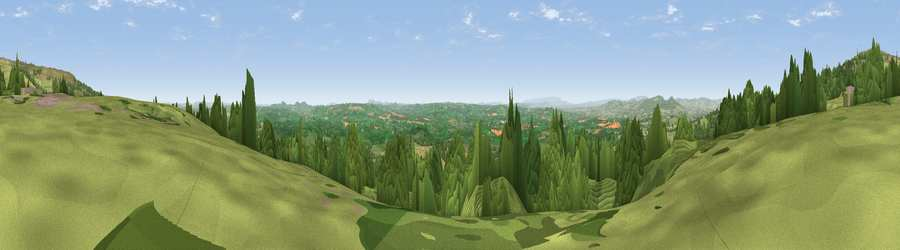

Viewpoint near Hope Bagot
#3283 in England · top 7% of its area beats it · near Hope BagotWhere it is
The exact computed spot (SO 59838 73725). Click the marker for map links.
The view, rendered

A 360° render of this exact spot computed from the terrain model, tree cover and land cover — summer colours, afternoon light, calibrated against photographs of famous viewpoints. Real trees, hedges and buildings will differ in detail.
The panorama
Grey silhouette: terrain skyline in each direction (720 bearings, Earth curvature and refraction included). Dashed green: skyline with trees (+15 m) and buildings (+8 m) as obstacles. Blue strip: how far the ground is visible on each bearing.
Where the view opens
Wedge length = distance to the farthest visible ground on that bearing (vegetation-aware). Rings at 10, 25 and 50 km.
What fills the view
43% woodland · 40% grassland · 16% cropland ·
Angular shares of the visible panorama (visual magnitude), not map area. Landscape diversity 0.46 (0–1 Shannon).
Key numbers
More beautiful places nearby
The staircase of upgrades: each row has a higher view potential than everything closer. Driving times are estimates from straight-line distance, calibrated against real road routing — check an actual route before setting out.
| Place | Direction | Drive | Score |
|---|---|---|---|
| Viewpoint near Cleehill | NNW · 2 km | ~6 min | 82.3 |
| Titterstone Clee | N · 4 km | ~10 min | 83.8 |
| The Lawley | NNW · 26 km | ~42 min | 85.8 |
| North Hill | SSE · 32 km | ~50 min | 86.8 |
| Worcestershire Beacon | SSE · 33 km | ~51 min | 87.1 |
| Viewpoint near West Quantoxhead | SSW · 140 km | ~163 min | 87.9 |
| Viewpoint near West Quantoxhead | SSW · 140 km | ~164 min | 88.7 |
| Holdstone Hill | SW · 159 km | ~182 min | 90.2 |
52.36010, -2.59118 · source: screening · position refined by local search. Computed location — check access rights before visiting.